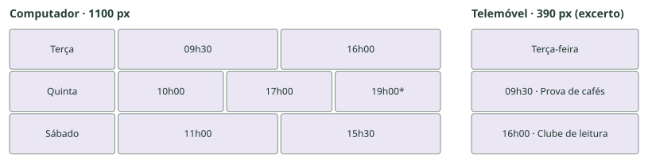

Medidas desta ficha
- Medidas a usar
- 14 px entre dias; 12 px entre o título do dia e a lista. Entre sessões: 10 px. Interior de cada sessão: 12 px. Coluna do dia a partir de 640 px: 128 px.
- Quando muda a disposição
- Base: dia por cima da lista. A partir de 640 px: dia à esquerda. A partir de 1000 px: sessões de cada dia lado a lado.
- Resultado esperado
- 390 px: dias e sessões empilhados. 768 px: títulos à esquerda, sessões empilhadas. 1100 px: sessões na mesma fila.
Larguras para testar: 390 px, 768 px e 1100 px. São larguras da janela do navegador. Só escreves uma media query se o exercício a pedir.
No CSS: escreve 16px, sem espaço entre o número e a
unidade.
Primeiro passo: Abre style.css no editor e lê a etapa 1.
Quando fizeres uma alteração, guarda o ficheiro e atualiza esta página para veres o que
mudou.
Ver o resultado esperado no computador e no telemóvel
Este esquema mostra as posições, sem escala. Para a largura intermédia, usa os testes no fim. O asterisco assinala o elemento que a ficha pede para acrescentar.

Área de trabalho · Programa semanal
Esta semana no café
Terça-feira
- Prova de cafés
- Clube de leitura
Quinta-feira
- Oficina de pão
- Troca de receitas
Sábado
- Caderno de viagem
- Histórias à mesa
Etapas e conceitos desta ficha
Já conheces: Grid no pai de cada grupo; colunas fixas e flexíveis; criação de colunas pelo navegador.
Com apoio nesta ficha: grid-auto-flow escolhe para onde entra a próxima sessão. Com column e uma única fila, a sessão nova abre outra coluna.
- Separa os três dias
- Empilha as sessões de cada dia
- Alinha o nome de cada dia
- Põe as sessões lado a lado
- Adiciona uma sessão na quinta
Encontras as instruções de cada etapa em style.css.
Quando é que está pronto?
Usa o modo responsivo do navegador. Experimenta 390 px (telemóvel), 768 px (intermédio) e 1100 px (computador).
Assinala os testes que passaram. As marcas desaparecem quando atualizas a página; guarda o
resultado em registo.md.
Desafio opcional
Apresenta a hora numa linha própria, em negrito, sem mexer no texto da atividade.